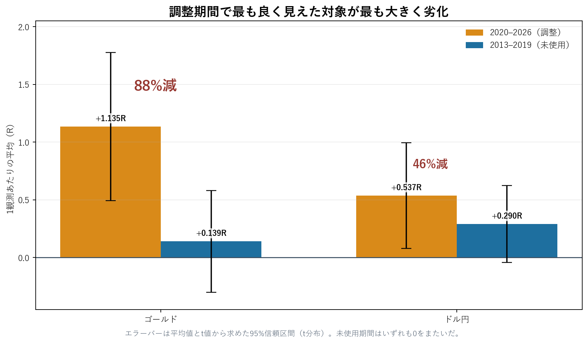

U.S. Employment Report Event Study
This report examines price behavior around 159 U.S. Employment Situation releases from 2013 through 2026 and documents a result that looked strongest in the tuning period but failed to replicate out of sample.
The strongest in-sample result deteriorated the most
Parameters selected on 2020–2026 data were held fixed and applied to the previously unused 2013–2019 period, which contained 83 scheduled releases. The gold result fell from +1.135R to +0.139R, an 88% reduction. USDJPY fell from +0.537R to +0.290R, a 46% reduction.
Gold had the highest mean in the tuning period and the largest deterioration in the unused period. Its unused-period t-statistic was 0.63, and its 95% confidence interval derived from the mean and t-statistic of [-0.301, +0.579]R crossed zero.
| Instrument | 2020–2026 tuning period | 2013–2019 unused period | Reduction |
|---|---|---|---|
| Gold | +1.135R, t=3.55, n=51 | +0.139R, t=0.63, n=70 | 88% |
| USDJPY | +0.537R, t=2.35, n=55 | +0.290R, t=1.74, n=64 | 46% |

The two periods also differed in surprise magnitude. Median absolute payroll surprise was 34–35 thousand in 2013–2019 and 62–64 thousand in 2020–2026. The ratio of initial movement to activation distance ranged from 1.16–1.60 in the earlier period and 1.48–2.25 in the later period.
A pre-observable regime filter did not resolve the problem. Gold observations in the high-surprise regime averaged +0.655R across the full sample, but −0.040R across 18 unused-period observations. Mixing the tuning observations back into the evaluation made the filter look stronger than its unused-period record.
A compact method for economic-event studies
- Split first. Separate a tuning period from an untouched evaluation period before examining candidate conditions.
- Show the denominator. A monthly release produces only about 53–56 usable observations over six years after exclusions and missing data.
- Report intervals. Present confidence intervals alongside means, medians, and win rates.
- Vary cost assumptions. Bid-only minute data do not contain the release-time spread, so cost sensitivity must remain explicit.
- Count the search. More than 40 candidate combinations were examined in the tuning period. The maximum is therefore partly a selection outcome.
- Use only ex-ante conditions. A filter must be observable before the event and must be evaluated on data not used to invent it.
What the sample showed
Median USDJPY one-minute range during the release minute, versus 2–4 pips in each of the preceding minutes.
Median gold one-minute range during the release minute, versus $1.0–$1.2 before the release.
Observed win-rate range when measuring direction after the release minute had ended.
Correlation between the two instruments' standardized outcomes; signs matched in 40 of 51 common observations.
Payroll surprise sign agreed with the initial USDJPY direction in 73% of all observations and 85% when the absolute surprise was at least 50 thousand. Gold showed the inverse relationship in 73% and 82%, respectively. These are contemporaneous historical associations, not forecasts.
Data boundary and limitations
Actual release values came from the BLS Employment Situation. Minute prices came from HistData.com. Consensus values came from a personal blog and Minkabu FX. Because redistribution permission for the latter two source types could not be confirmed, this public report contains no raw price rows, event-level minute series, consensus list, CSV, ZIP, or PDF.
The published material is limited to derived aggregates, statistics, charts, methodology, and chart-generation code. The minute data were Bid-only, did not include observed spreads, and could not reveal within-minute ordering of highs and lows. COVID-era releases from April through December 2020 were excluded from the main comparison.